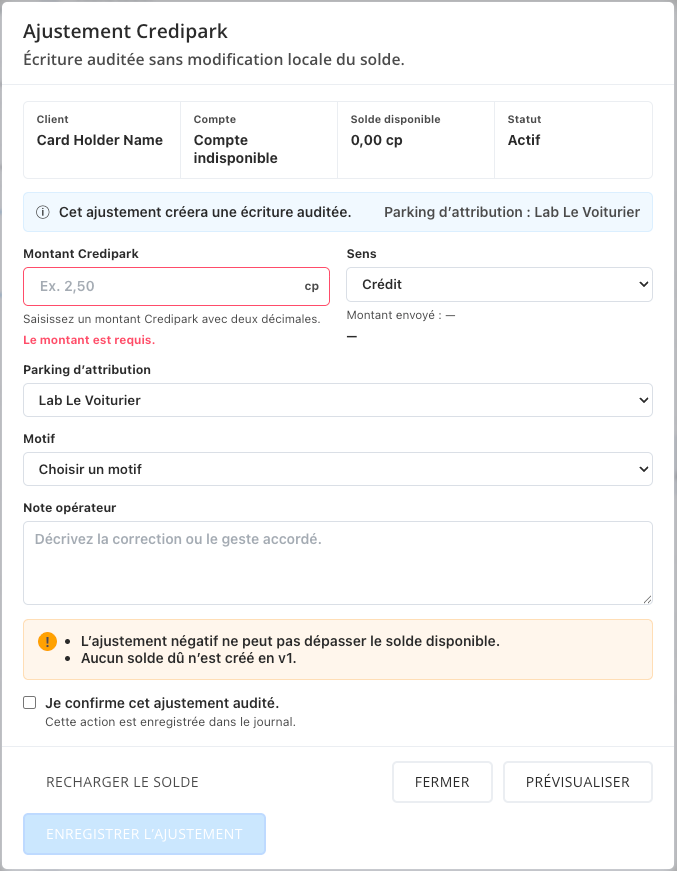

A · Saisie compacte
Montant et justificatif côte à côte. Moins de répétition et un formulaire plus court.
Ouvrir AWorkflow actuel. Le pied reste accessible sur petit écran.
Deux propositions interactives, ancrées dans le produit DashPark. Données fictives et réponses simulées : aucune écriture réelle.
Montant et justificatif côte à côte. Moins de répétition et un formulaire plus court.
Ouvrir AWorkflow actuel. Le pied reste accessible sur petit écran.
Une synthèse séparée rassemble le client, le parking, le montant et le motif avant confirmation.
Ouvrir BWorkflow avec références approfondies. Plus de contexte répété et de défilement.
Les sélecteurs de test permettent de vérifier les champs vides, les libellés longs, le compte indisponible et les réponses d’erreur. La prévisualisation reste facultative.
Statut : propositions à comparer, aucune direction de production approuvée. Les contrôles de simulation et références de requête sont réservés au test.
